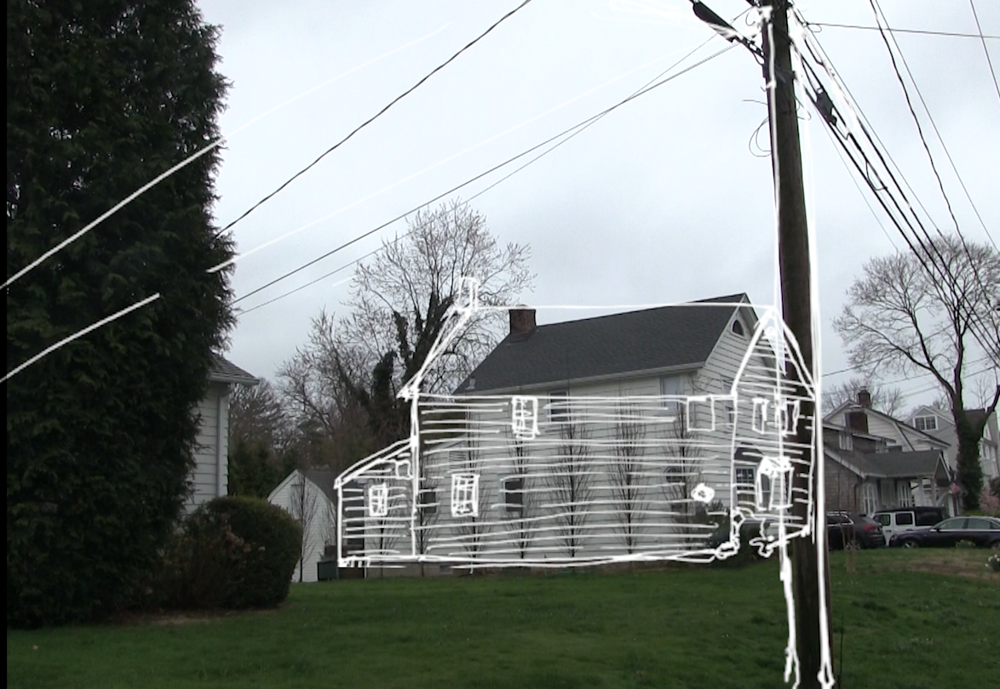
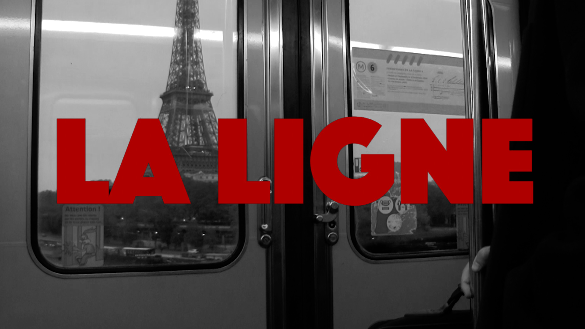

Top 100
JOURNAL | Music

11.09.2025
My current top 100 favorite songs.
see moreFall in NY
STUDIO | Shorts

11.04.2025
Walking around central park in the fall.
see morePassenger Side
STUDIO | Passenger Side
10.19.25
a trip & more to scotland
see morePassenger Side
STUDIO | Passenger Side

Sep 25
Went to Scotland. Working on a new vid. Hopefully soon.
see moreNeedledrops
JOURNAL | Film

04.27.25
Some of my favorite movie soundtracks. No particular order, just good music and movies.
see itThe Strokes - Ranked
JOURNAL | Music
04.13.25
Top 10 The Strokes songs in my opinion (for what it's worth)
see ita misty day
STUDIO | Shorts
04.13.25
walking the dog and doing some sketching
watch itBoyhood
JOURNAL | Film
03.23.25
Where has my boyhood gone? A look into Linklater's 2014 film Boyhood and the pains of growing up.
read itnew york
STUDIO | Shorts
03.22.25
exploring my new city.
watch itdriving to the airport
STUDIO | Shorts
02.09.25
Looking out the window while my parents drive me to the airport as I move away from home. My thoughts down below.
read moreseabird
STUDIO | Shorts

02.07.25
Somewhere along the Connecticut coast. It's beautiful out here and this vid hopefully shows that.
watch itLa Ligne
STUDIO | La Ligne
12.22.24
Meeting someone you'll never know
Two young guys from different parts of Paris take the same metro every day—just barely missing each other. La Ligne dives into their contrasting lives and the quiet moments that almost bring them together.
see moreWhat I'm Spinning
JOURNAL | Music
12.08.24
Making a list of music I like to keep track over the years. Gonna do 5 songs a month I have on repeat and then highlights from each year of artists and albums I listened to. The results are in for 2024.
see itFor Emma, Forever Ago
JOURNAL | Music
11.26.24
How do you deal with heartbreak?
In honor of it getting colder out, I would like to talk about an album that is very near and dear to me.
read itin Tokyo
STUDIO | shorts

10.29.24
"Completely chaotic yet beautifully ordered"
A short video of shots I took while walking around Tokyo at night.
watch itLa Ligne
STUDIO | la ligne
10.29.24
A new project that just started shooting. Directed by me starring Valentin Dallem and myself. Here is a couple very very early shots.
see morebits of Japan
STUDIO | photos
10.29.24
A couple flicks of my time in Japan. Much more to come and edit. What a beautiful country.
see morePoint5
STUDIO | Point5

10.17.24
Launching PointFive/Point5. Home to my sketches. Find the instagram at point__five. Will be posting all my sketches here from now on.
visitBluebird
STUDIO | Bluebird
10.05.24
A recent college graduate, lost and uncertain about his future, embarks on a cross-country journey to escape his past. Surrounded by old memories and facing an unclear path ahead, he searches for meaning and direction. The film delves into themes of self-discovery, nostalgia, and the struggle to confront unresolved emotions.
see moreand more
STUDIO | Point 5

10.02.24
Here is a handful more. Contact for purchase or interest.
see morepompidou
STUDIO | photos

10.01.24
Exploring Le Centre Pompidou. Pictures taken by Valentin Dallem.
see moreBluebird teaser
STUDIO | Bluebird
9.29.24
A little something for Bluebird coming out very soon.
watch itmontmartre
STUDIO | shorts

9.24.24
The hills of montmartre may pose a challenge, but it is worth it. Arguably my favorite neighborhood of Paris.
watch itturning leaves
STUDIO | shorts

9.11.24
It is almost fall here in Paris. It is getting cooler out and the leaves are starting to turn.
watch itso far
STUDIO | Point 5
9.09.24
A handful of sketches I have done since I have arrived in Paris.
read morebluebird
STUDIO | Bluebird

9.04.24
Some shots of an upcoming project I’ve been working on titled Bluebird. I started filming and documenting my life back in May to see if a story would come of it. This is my first time doing something like this so take it easy alright. Stay tuned these coming weeks.
read moreplace des vosges
STUDIO | shorts

I spent the afternoon in place des vosges. Here, I documented some of the people and buildings I saw that make this place so special.